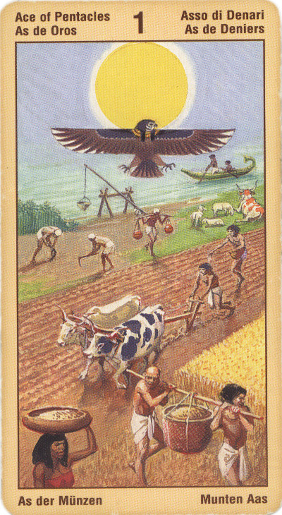

Туз Пентаклей
Прямое положение: абсолютная удовлетворенность, счастье, экстаз; золото.
Значение: Эта карта считается самой лучшей из всех Младших Арканов.
Каждый Туз несет с собой какой-то дар, в данном случае этот дар носит чисто материальный характер. Это может быть предложение работы, продвижение по службе или увеличение зарплаты либо наследство или же другое неожиданно привалившее счастье.
В теме туза пентаклей звучит триумф. Туз пентаклей может означать обретенные умения, новые источники доходов, новые знакомства, новые возможности для роста.
Наличие этой карты в раскладе указывает на то, что субъект, возможно, движется прямиком на вершину социальной пирамиды.
Для политиков, артистов и других людей, связанных с публичной деятельностью, туз пентаклей будет означать вопросы их признания.
Никогда не пытайтесь определить по данной карте, сумеете ли вы достичь желаемого в отношениях с людьми или любимым человеком, - это сфера влияния масти Чаш (или, в зависимости от испытываемых вами - Мечей).
Любой начатый бизнес обречен на процветание. Получение наследства. Повышение зарплаты, выгодный брак. Выгодное вложение денег, возможность удачно поменять работу.
В перевернутом виде его значение не меняется: денарий, он ведь круглый.
В перевернутом положении туз пентаклей может означать невозможность роста, неплодородность, отсутствие источников дохода, богатство без счастья, процветание удовлетворения, здоровье, которое тратится попусту, растраты, в том числе денежные, ненасытную жажду, столкновение с фальшивками, подделками (скорее всего, материальными). Слишком крутые планы- надо чуть снизить планку. Скупость, жадность.